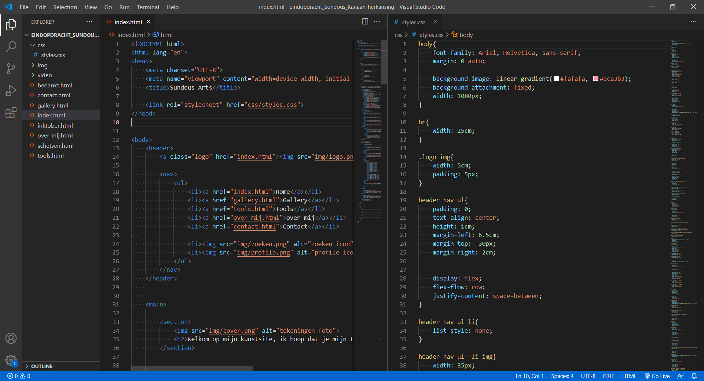
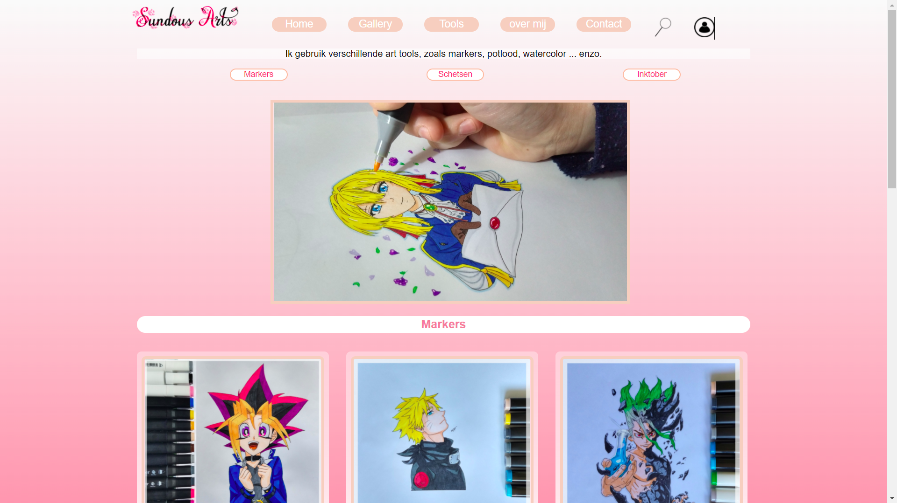

Mijn kunst website.
Als iemand die van kunst en tekenen houdt, vond ik het leuk dat de eerste website van mijn creatie iets was dat van mij was en dat de inhoud van mijn eigen werk is. Dus bouwde ik een site die een set van mijn tekeningen en tools bevat, op een mooie en leuke manier om te bladeren.
Waar ik trots op ben in mijn werk:
- De website code
Dit was mijn eerste keer om te coderen en een website te maken. Het was veel werk om te doen, maar ook leuk om te zien dat mijn code goed werkt. website van mijn tekeningen te maken, Ik heb de foto's, linken en het idee van de inhoud, dus kan ik op de code concentreren. Ik heb veel tijd besteden om mijn code te bouwen en leren hoe alles met elkaar toepassen moet, daarom ben ik trots op mijn werk en zich zelf op het eind van dit vak.
- Gallery pagina
Ik heb trots op mijn website en mijn Gallery pagina's, want het bestaan mooi uit en zoals ik hun wild. Duidelijk, mooi kleuren en het staat mooi uit dat was hoe ik om mijn tekeningen wild te zien en ik heb dat gedaan met de html en css kennis die ik heb geleerd.
- Tools pagina

Ik heb trots op mijn tools pagina van het staat heerlijk uit, de teksten staan goed met duidelijk uitleg en de knoppen naar de sites van de bronnen werkt heel goed.